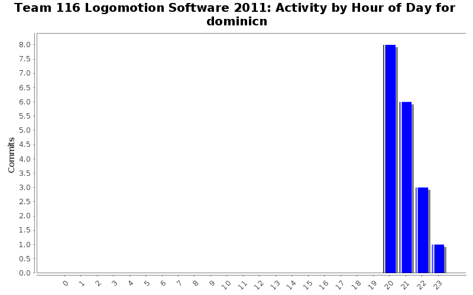

| Directory | Changes | Lines of Code | Lines per Change |
|---|---|---|---|
| / | 18 (100.0%) | 308 (100.0%) | 17.1 |
Fixed more.
2 lines of code changed in 1 file:
Committing to fix compile errors.
12 lines of code changed in 1 file:
Fixed so that at the end of the drive_straight() function, the motors will stop spinning.
Made timers to limit the rate at witch the motor speed is checked.
21 lines of code changed in 1 file:
Does not compile. I was unable to test it, because I do not currently have access to WindRiver. I have fixed the drive_straight() function.
24 lines of code changed in 2 files:
Added drive straight function to Navigation.cpp
14 lines of code changed in 1 file:
Added code.
32 lines of code changed in 1 file:
Added code for EndEffector::set_position() for staggered peg position.
Added EndEffector:: namespace to all of the functions.
Added break statement to FEEDER in set_position. The code is different from the FLOOR position because of the state variable.
Fixed syntax and spacing.
22 lines of code changed in 1 file:
Added Piston class for easy extending and compressing of Solenoids
97 lines of code changed in 2 files:
Gave more accurate names for the solenoid channels.
4 lines of code changed in 1 file:
Changed pound define shortcuts for extending pistons into actual functions.
42 lines of code changed in 2 files:
Fixed bugs.
4 lines of code changed in 1 file:
Changed solenoid objects to pointers
5 lines of code changed in 1 file:
Fixed capitalization error in PegHeightType
1 lines of code changed in 1 file:
Got rid of Piston objects.
0 lines of code changed in 1 file:
Finished the file.
28 lines of code changed in 1 file: